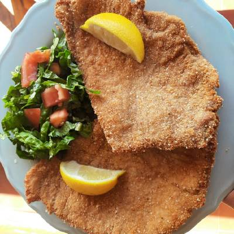

Milanesa

To do a milanesa you need this ingredients:
- 8 steaks of meat
- Bread crumbs
- 2 eggs
- mustard
- 1 lemon
- 1 garlic
- salt and pepper
step by step:
- The first thing we are going to do is beat the eggs and add all the marinade ingredients inside.
Let's mix everything well.
Next: We are going to salt the milanesas and place them in the marinade,
they have to be well soaked. We are going to cover them with plastic wrap and we are going to take them to the fridge for at least one hour. The more the better.
- After that time, we are going to take them out of the fridge. Then, Milanese by Milanese, we are going to bread them with the grated bread, pressing on both sides until it covers them well.
- Finally, what remains is to fry them in very hot oil until they are golden brown and enjoy them a lot.
And thats how is made the favorite food of messi, the goat.